Исторические снимки. 18 октября оформление заменено светлой версией. Галерея ниже показывает предыдущий тёмный вариант; новая версия доступна по ссылке «Открыть сайт». Снимки и браузерная проверка нового оформления пока отсутствуют.
DEVINY · ЛОКАЛЬНЫЙ ОБЗОР · 24 СЕНТЯБРЯ 2026
Тренировки, прогресс и люди рядом.
Сайт обновлён на основе iOS и Backend. Слева — опубликованная версия, справа — реализация на локальной ветке. На первом экране теперь реальное приложение и контакт по вопросу доступа.
15 страниц на RU/EN/AZ. 60 сочетаний размеров и страниц без горизонтального скролла; 0 нарушений в 30 автоматических проверках axe. Сайт не опубликован, реальные сообщения из формы не отправлялись.
Первый экран · 1440 px
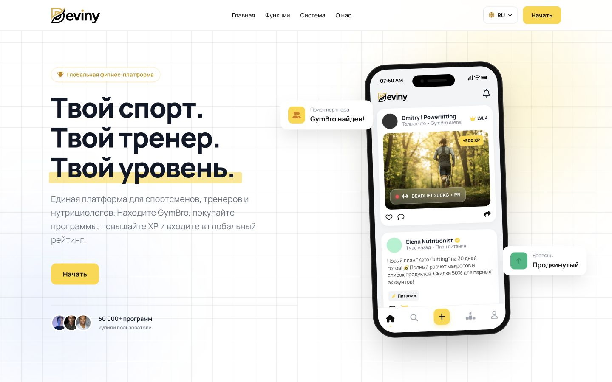
До · опубликованный deviny.me
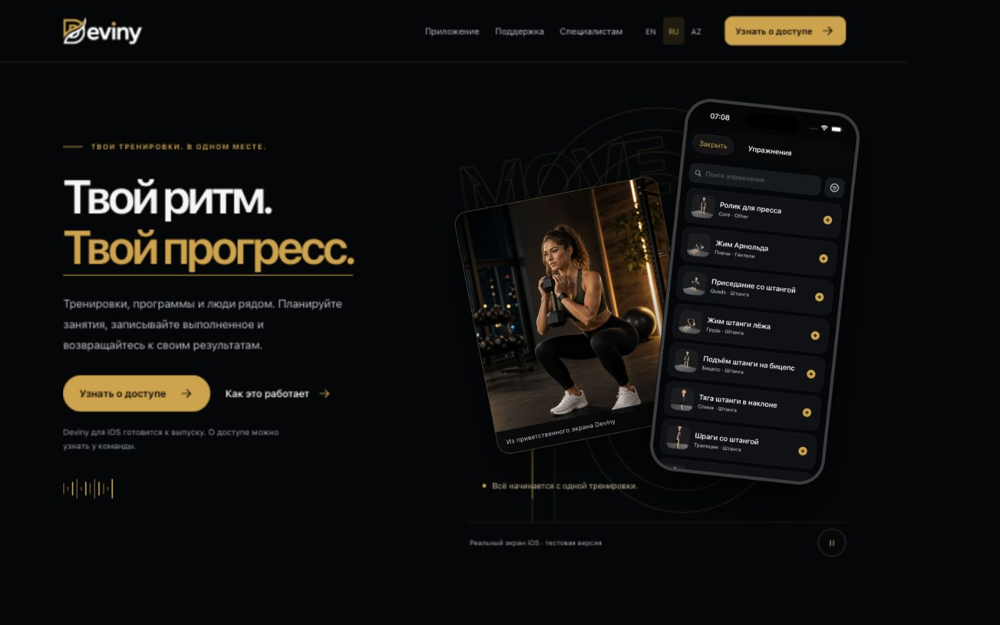
После · локальный preview
Мобильный экран · 390 px
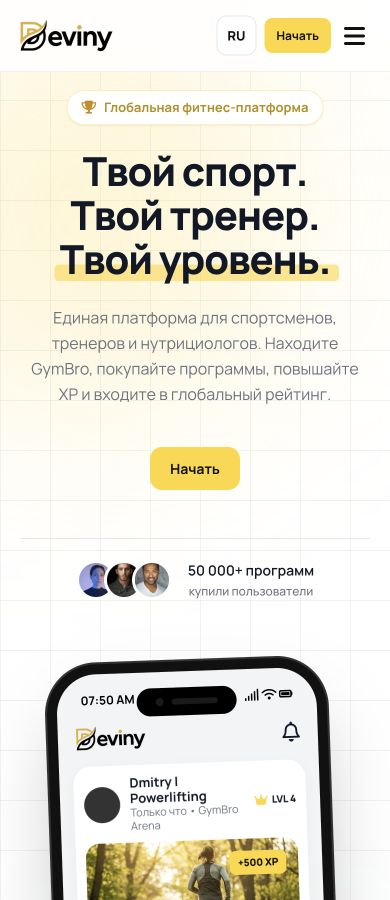
До · 390 px
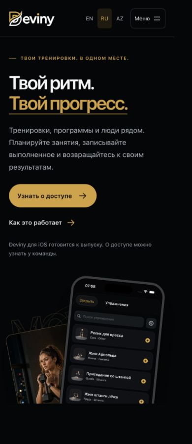
После · 390 px
Путь специалиста и контакт
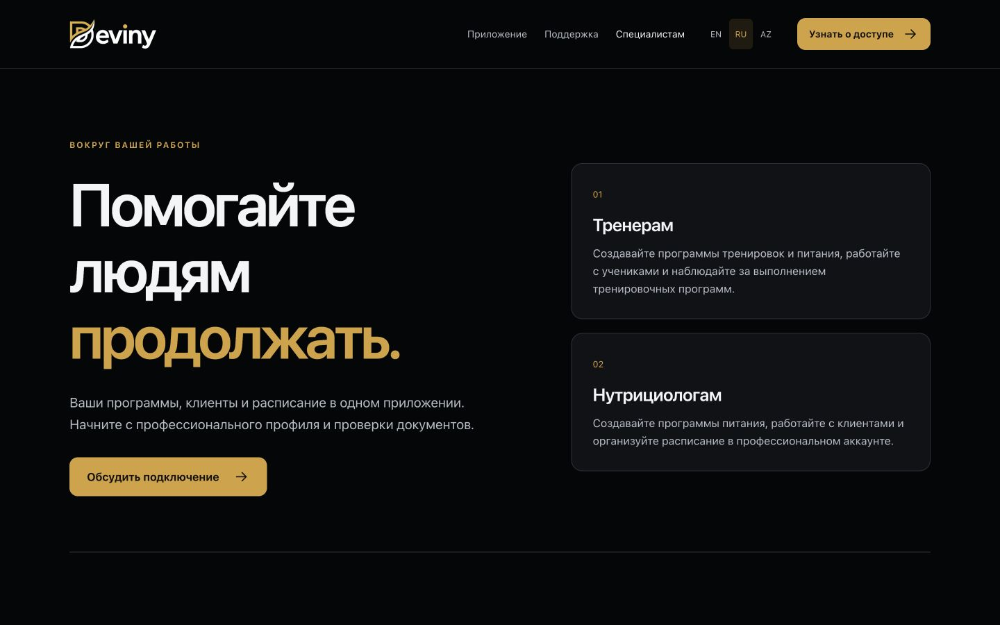
Разные роли и понятное подключение
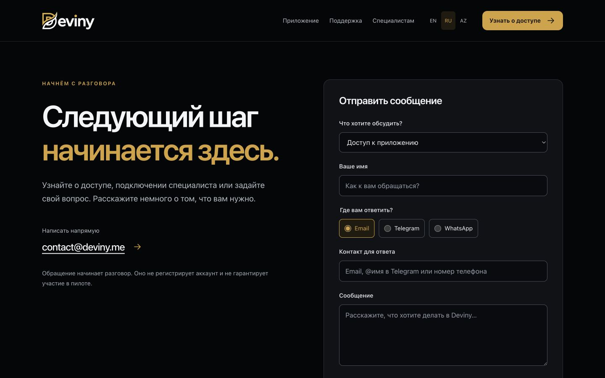
Обращение по доступу, работе специалиста или поддержке
О продукте и команда
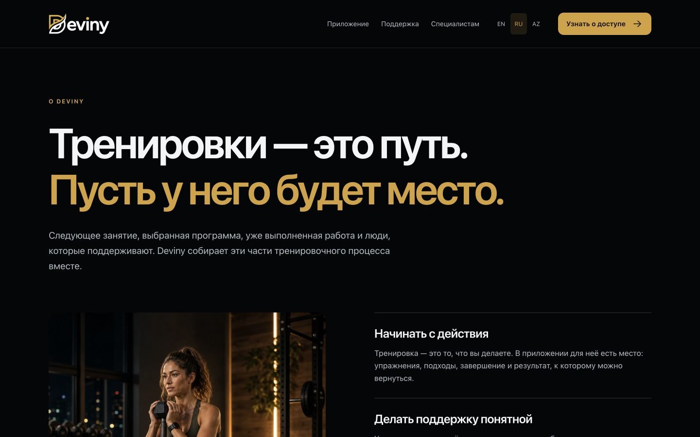
Продукт и подход
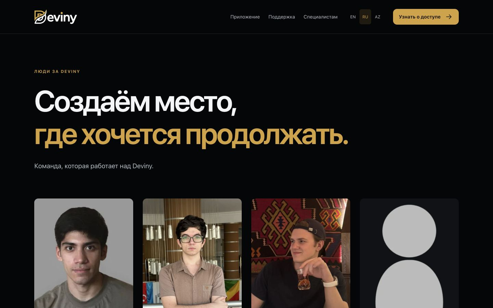
Существующие участники и фотографии
Поддержка и предложения
Три разные роли поддержки
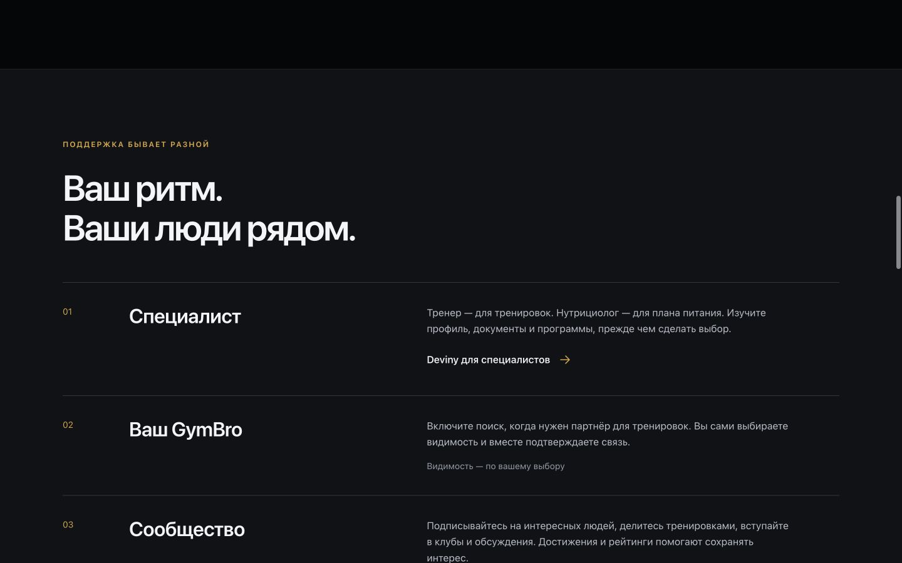
Разделённая бизнес-модель
English и Azərbaycanca
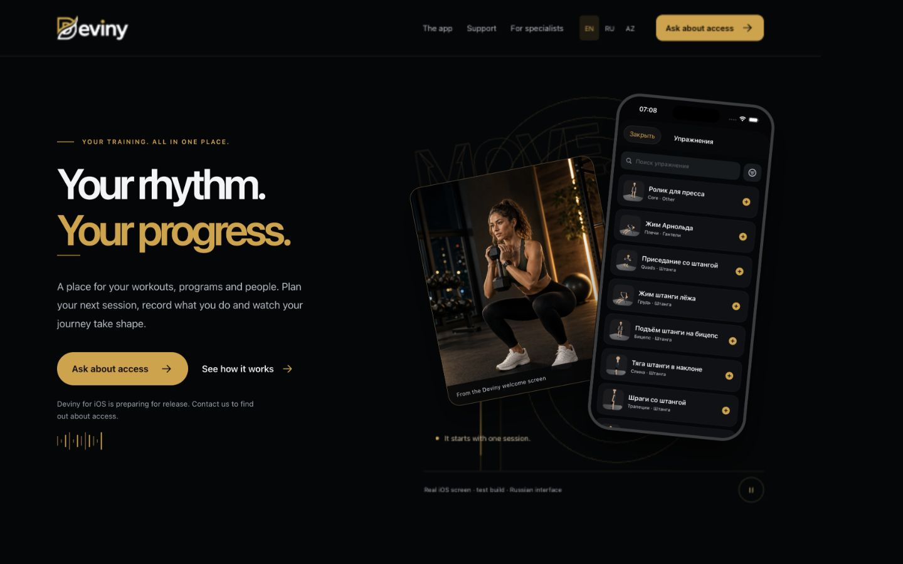
EN
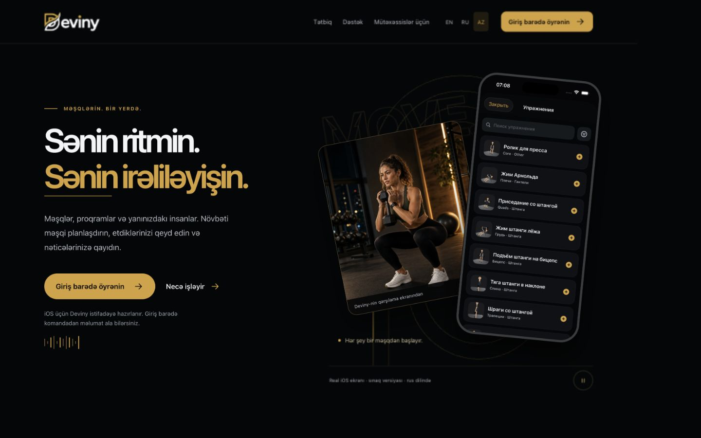
AZ
Состояния формы · локальный mock
Синтетические данные, без отправки реального письма.
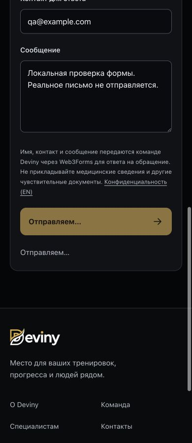
Успех только после подтвержденияОшибка сервиса · сообщение сохранено